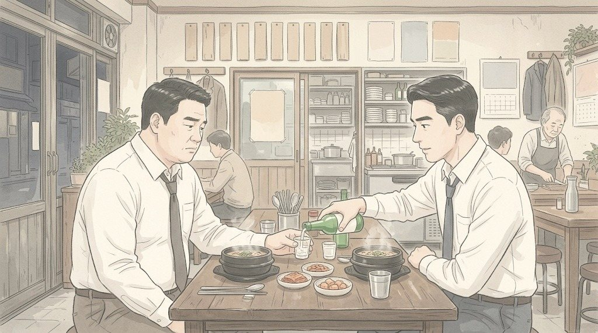
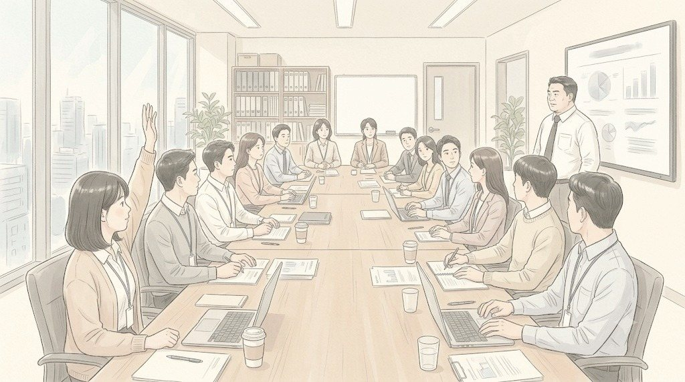

2014년 9월 5일 금요일, 밤 11시 50분. 청연타워 17층 전산실.
추석 연휴를 사흘 앞둔 밤이었다. 노승환 과장은 서버 모니터 앞에 앉아 있었다. 서른여덟 살. IT팀 입사 11년차. 옆자리에는 입사 동기 모태준이 컵라면을 먹고 있었다.
"승환아, 너 이거 진짜 자정에 열어?"
"열래."
"테스트 사흘 했잖아. 원래 3주 잡았던 거."
"마케팅에서 추석 전에 무조건 열래. 대표님 지시래."
청연몰 추석 선물 세트 특가관. 원래 계획은 3주 개발, 1주 테스트였다. 일정이 내려온 건 2주 전이었다. 마케팅의 요구사항은 그 사이 일곱 번 바뀌었다. 마지막 변경은 어제 오후였다. 첫 화면 배너를 세 개에서 다섯 개로.
자정. 노승환이 버튼을 눌렀다.
0시 3분. 접속자 사천 명.
0시 7분. 만 이천 명.
0시 11분. 화면이 멈췄다.
모태준이 컵라면을 내려놓았다. 서버 모니터의 그래프가 빨간색으로 꽉 찼다. 결제 서버가 응답하지 않았다. 결제 중이던 고객 삼천이백 명의 화면에 오류 메시지가 떴다. 그중 일부는 카드 승인이 났는데 주문이 생성되지 않았다.
노승환은 그 밤을 기억했다. 새벽 4시까지 서버를 되살렸다. 오전 6시부터는 고객센터 대신 전화를 받았다. 돈은 빠져나갔는데 주문이 없다는 전화였다. 한 할머니는 손녀에게 보낼 선물이었다고 울었다.
월요일 오전. 사고 경위 보고 회의.
마케팅 담당 부장은 회의실에 들어오지 않았다. 대신 메일이 한 통 와 있었다. '일정은 IT팀과 협의하여 확정함.' 협의한 적은 없었다. 통보를 받았을 뿐이었다. 그러나 그 통보는 문서로 남아 있지 않았다. 전화로 받았기 때문이었다.
경위서의 책임자 칸에 노승환의 이름이 적혔다. 견책. 그해 승진 대상에서 빠졌다.
그날 밤, 모태준이 그를 회사 뒤 해장국집으로 데려갔다.
"승환아. 너 왜 그 전화 녹음 안 했어."
"녹음을 왜 해. 같은 회사인데."
모태준은 소주를 따라 주며 한숨을 쉬었다.

"같은 회사니까 하는 거야."
그 뒤로 노승환은 두 가지를 바꿨다. 첫째, 모든 일정 요청을 메일로만 받았다. 둘째, 누가 무엇을 묻든 먼저 이렇게 대답했다.
"6개월입니다."
6개월은 그가 계산한 숫자가 아니었다. 방패였다. 6개월이라고 말하면 상대는 화를 냈다. 그리고 진짜 필요한 것만 남기고 나머지를 포기했다. 그 과정에서 요구사항은 문서가 되었다. 문서가 되면, 다음 사고 때 그의 이름 혼자 경위서에 적히지는 않았다.
7년이 지났다. 사람들은 그를 'IT의 벽'이라고 불렀다. 그는 그 별명이 싫지 않았다. 벽은 적어도 무너지지는 않았다.
2021년 4월 셋째 주 화요일, 오후 4시. IT플랫폼그룹장실.
노승환은 마흔다섯 살이 되었다. 부장. 그룹장. 책상 위에는 온라인기획파트에서 온 메일이 떠 있었다.
'수결 상세페이지 신규 템플릿 적용 요청 - 브랜드몰 전 상품 확대 검토.'
보낸 사람은 한지석이었다. 첨부 파일이 세 개였다. 요구사항 정의서, 우선순위 표, 그리고 '변경 금지 서약'이라는 제목의 한 장짜리 문서.
노승환은 마지막 파일을 열었다.
'온라인기획파트는 본 요구사항을 개발 착수 후 변경하지 않습니다. 부득이한 변경은 차기 개발 주기로 넘기며, 그로 인한 일정 지연은 온라인기획파트가 책임집니다. - 파트장 한지석.'
그 아래 권재혁 상무의 서명까지 있었다.
노승환은 문서를 오래 봤다. 7년 동안 마케팅에서 이런 문서를 받은 적은 없었다.
누가 칸막이를 툭툭 두드렸다. 모태준이었다. 정보보안그룹장. 2주 전 간편결제 보안 심의를 2주 만에 끝내 준 사람.
"승환아, 그거 봤어? 한지석이 보낸 거."
"지금 보고 있어."
"나한테도 참조로 왔더라. 서명까지 받아 왔네."
모태준이 노승환의 자리 칸막이에 팔을 걸치고 섰다.
"너 이번엔 몇 개월이라고 할 거야?"
노승환은 대답하지 않았다. 대신 창밖을 봤다. 광화문 거리에 봄비가 내리고 있었다.
"태준아. 2014년에 그 할머니 기억나?"
"손녀 선물?"
"응. 나 그 할머니한테 직접 환불해 드렸잖아. 계좌로. 그때 그분이 뭐라고 했는지 알아?"
"뭐라고 했는데."
"'젊은 양반이 고생이 많네.' 화낼 줄 알았는데."
노승환은 메일 창으로 돌아갔다.
"그때부터 나는 고객을 안 봤어. 회사 안의 사람들만 봤지. 누가 나를 경위서에 올릴지."
"그게 잘못된 건 아니잖아. 살아야지."
"응. 근데 그 사이에 우리 몰은 결제까지 아홉 번 누르는 몰이 됐어. 그중 두 단계는 내가 만든 거야. 사고 날까 봐 넣은 확인 창."
모태준은 아무 말도 하지 않았다. 노승환이 키보드에 손을 올렸다.
"이번엔 3주라고 할래."
"3주? 너 정말 3주에 돼?"
"3주에 80%. 나머지 20%는 다음 주기."
"그 말 한지석한테 하면 걔 좋아서 울겠다."
"울라고 해. 대신 요구사항 바꾸면, 그때는 6개월이야."
노승환은 답장을 썼다. 짧았다.
전송 버튼을 누르기 전에 그는 한 줄을 더 썼다가 지웠다. 다시 썼다.
수요일 오전 9시. 온라인기획파트.
한지석은 메일을 열고 한참 말이 없었다. 이우진이 어깨너머로 봤다.
"3주요? 노 부장님이 3주라고 하셨어요?"
"응."
"6개월 아니고요?"
한지석은 마지막 줄을 가리켰다. '서약서, 고마워요.'
"우진아. 그 서약서 아이디어, 누구 거였지?"
"최 과장님이요. 카드사 다닐 때 IT팀이랑 그렇게 일했대요."
한지석은 파티션 너머 최윤아를 봤다. 그녀는 모니터에서 눈을 떼지 않았지만, 입꼬리가 아주 조금 올라가 있었다.
그날 오후, 노승환은 IT플랫폼그룹 주간 회의에서 팀원들에게 말했다. 개발자 열네 명이 앉아 있었다.
"이번 수결 템플릿 건, 3주로 간다."
막내 개발자 진하늘 사원이 손을 들었다. 입사 2년차. 노승환의 6개월을 한 번도 의심해 본 적 없는 세대였다.
"그룹장님, 원래 6개월 아니에요?"

"원래는 그랬지."
"왜 바뀌었어요?"
노승환은 잠깐 생각했다. 그리고 화면에 '변경 금지 서약'을 띄웠다.
"이번엔 저쪽이 먼저 벽을 하나 허물었으니까."
진하늘은 그 문서를 한참 봤다. 그리고 수첩에 무언가를 적었다. 나중에 이우진이 들은 이야기로는, 그날 진하늘의 수첩에는 이렇게 적혀 있었다고 했다.
'벽은 6개월. 문은 3주.'
(EP17 끝)